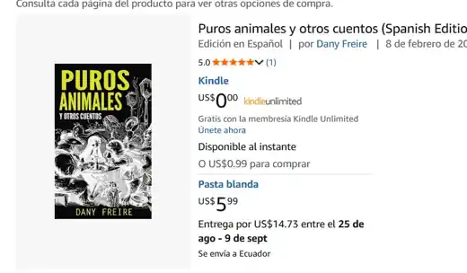

Diseño
Publicaciones
& Editorial
Ideas convertidas en libros, journals y productos editoriales listos para publicar.
Del contenido al objeto.
Palozebra ha desarrollado publicaciones propias y proyectos editoriales desde la estructura y el concepto visual hasta la preparación final para distribución digital e impresión.
El trabajo combina contenido, portada, maquetación, formato y publicación: no solo diseñar una pieza gráfica, sino hacer que el proyecto llegue a existir como producto terminado.
Publicado
Puros animales y otros cuentos.
Un proyecto donde escritura, diseño y publicación forman parte del mismo proceso creativo.

Más publicaciones
Una línea que sigue creciendo.
Chain JournalProducto propio de Palozebra: un journal físico de 60 días para construir constancia un día a la vez.Ver producto →
Protocolo S.E.R.Serie editorial con variantes de portada y ediciones dirigidas a públicos específicos.
Publicación digitalPreparación de contenidos para formatos Kindle y distribución en plataformas.
La idea
Diseñar también es llevar una idea hasta el mundo real.
Editorial, contenido y publicación trabajando como un solo proceso.